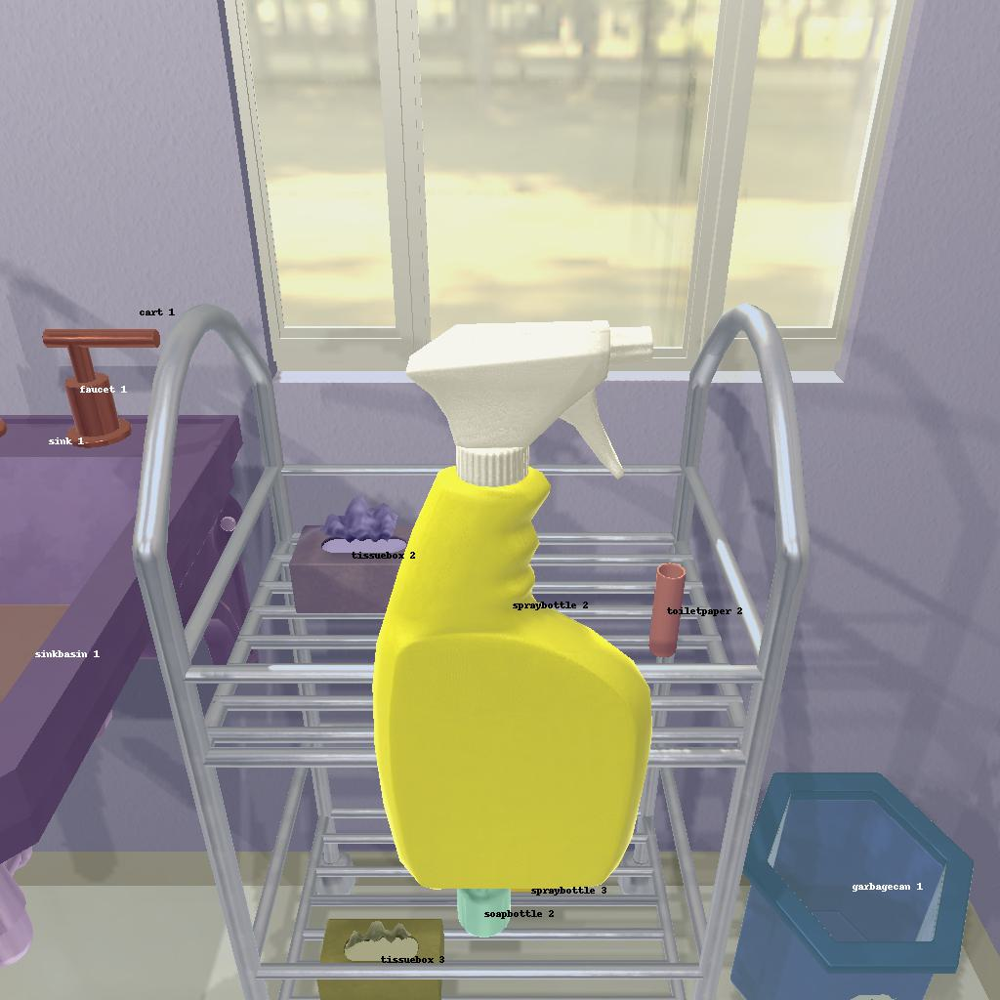

---------------------------------------------------------task: 28---------------------------------------------------------
--------------------------------------------------------------------------------------------------------------------------------------------------------------------
--------------------------------------------------------------------------------------------------------------------------------------------------------------------
Step:--------------------------------------------------------------------------16-------------------------------------------------------------------------------
----------------------------------------
VLM Prompt:
Image1:
Image2:
**Instruction**
1. Analyze the provided image to identify all visible household objects, focusing on those relevant to the task description "find two spraybottle and put them in toilet."
2. Use the analysis of the image and the task hint "The agent must find an object of the desired type, pick it up, find the correct location to place it, put it down there, then look for another object of the desired type, pick it up, return to previous location, and put it down there with the other object." to answer the question: what is the most reasonable action in the choices for the task description "find two spraybottle and put them in toilet"?
4. Decide and write the answer using the template: The answer is: (i): , where i is the real number. If there is no desired object in the image, search every place based on **Initial Observation** to find the object. And if no one is exactly correct, choose a similar answer.
**Initial Observation**
You are in the middle of a room. Looking quickly around you, you can see bathtub (1), bathtubbasin (1), cart (1), sink (1), garbagecan (1), sinkbasin (1), countertop (1), drawer (1-4), toilet (1), toiletpaperhanger (1)
**Answer Choices**
(1): go to bathtub 1
(2): go to bathtubbasin 1
(3): go to sink 1
(4): go to garbagecan 1
(5): go to sinkbasin 1
(6): go to countertop 1
(7): go to drawer 1
(8): go to drawer 2
(9): go to drawer 3
(10): go to drawer 4
(11): go to toilet 1
(12): go to toiletpaperhanger 1
(13): put spraybottle 2 in/on cart 1
(14): examine spraybottle 2
(15): examine cart 1
**Answer**
Let's think step by step by following the instructions.
----------------------------------------
----------------------------------------
Original Response:
First, we need to identify all visible household objects in the images provided. In Image1, we can see the following objects:
- cart 1
- sink 1
- faucet 1
- tissuebox 2
- tissuebox 3
- soapbar 1
- spraybottle 2
- spraybottle 3
- soapbottle 2
- garbagecan 1
In Image2, the spraybottle 2 is more prominently visible, but the rest remains the same.
Now, for the task "find two spraybottle and put them in toilet," we need to find the objects of the desired type, which are the spray bottles. From the images, we can see two spray bottles on cart 1.
The task hints suggest the agent must pick up the object and find the correct location to place it. Since we have identified the spray bottles, the next step would be to pick them up.
However, none of the answer choices directly state picking up the spray bottles. The most similar action that we can take is to examine the spray bottle, which can be an initial step before picking it up. So, the most reasonable action for the task would be to examine spraybottle 2, as it is the one that is most clearly visible in Image2.
Therefore, the answer is: (14): examine spraybottle 2. After examining, the agent would then proceed to pick it up and follow the rest of the task instructions.
----------------------------------------
----------------------------------------
>>> Refine Original VLM Response and Get Pure Action: No action
----------------------------------------
-----------------------------------------------------------------
Running time: 13.331840753555298 seconds
Total Money: 14.238910000000004
-----------------------------------------------------------------
-----------------------------------------------------------------
Text Observation:Nothing happens.
-----------------------------------------------------------------
UNSUCCEED